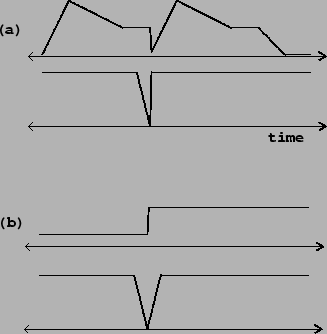

The muting technique is to apply an envelope to the output amplitude, which is quickly ramped to zero before the parameter change and then restored afterward. It may or may not be the case that the discontinuous changes will result in a signal that rises smoothly from zero afterward. In Figure 4.5 (part a), we take the example of an amplitude envelope (the output signal of an ADSR generator), and assume that the discontinuous change is to start a new note at amplitude zero.
|  |
To change the ADSR generator's output discontinuously we reset it. This is a different operation from triggering it; the result is to make it jump to a new value, after which we may either simply leave it there or trigger it anew. Figure 4.5 (part a) shows the effect of resetting and retriggering an ADSR generator.
Below the ADSR generator output we see the appropriate muting signal, which ramps to zero
to prepare for the discontinuity. The amount of time we allow for muting
should be small (so as to disrupt the previous sound as little as possible)
but not so small as to cause audible artifacts in the output.
A working example of this type of muting was already shown on Page
 ; there we allowed 5 msec for ramping down.
The muting signal is multiplied by the output of the process to be de-clicked.
; there we allowed 5 msec for ramping down.
The muting signal is multiplied by the output of the process to be de-clicked.
Figure 4.5 (part b) shows the situation in which we suppose the discontinuous change is between two possibly nonzero values. Here the muting signal must not only ramp down as before (in advance of the discontinuity) but must also ramp back up afterward. The ramp-down time need not equal the ramp-up time; these must be chosen, as always, by listening to the output sound.
In general, muting presents the difficulty that you must start the muting operation in advance of making the desired control change. In real-time settings, this often requires that we intentionally delay the control change. This is another reason for keeping the muting time as low as possible. (Moreover, it's a bad idea to try to minimize delay by conditionally omitting the ramp-down period when it isn't needed; a constant delay is much better than one that varies, even if it is smaller on average.)